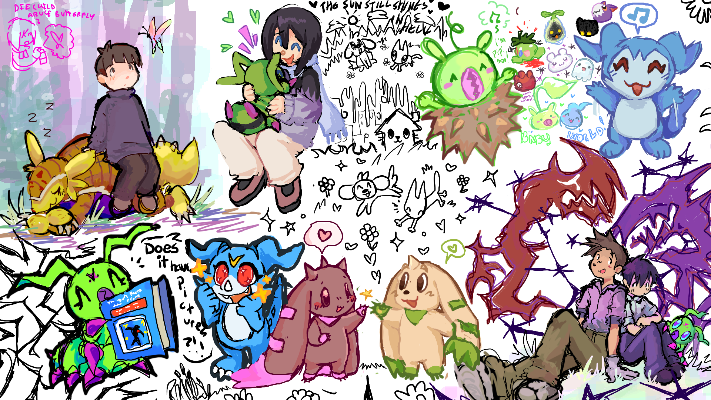

it's been a while! way longer than i remembered, actually. sorry. it's been a very stressful month. despite the fact i put my 2 weeks in at work at the very beginning of the month, my workplace continued to mistreat me for even longer than that. i was about to explode from it all, lol. but i didn't really want to type up a long journal entry this time. a lot of things have happened since i last talked here, too many for me to recount. all that matters is i'm at least at a point where i don't feel like i'm about to die.
i wanted to share some of the drawings my friends and i have done this month since i lost steam. i used to draw all the time, but for the past few years it became really painful for me. i've been glad to pick it back up a little with friends. i'll maybe catch up a bit for real some more later, but right now i've just got these to share. enjoy!
click on the images to see them in full view.
this digimon one was just between me and coda! i drew veemon, winter ken with wormmon, terriermon, and chibimon. as well as a few of the babies and the middle doodles.
in this one i drew impmon and vulpix, the yellow sketchy yuuichi, and the personal image in the bottom right. our friend max drew the omega flowey, and the rest are coda's drawings.
coda drew most of what's on this canvas, but i painted the picture in the bottom right. clyde did the pictures above it.